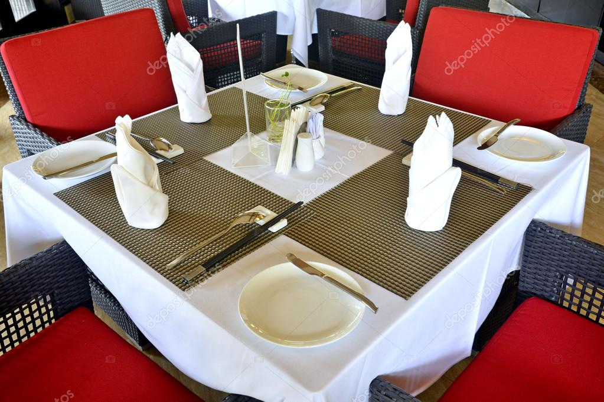

Your table is waiting for you.....


We have a large 20 x 25 room that can be reserved for special occasions like retirements, birthday parties, rehearsal dinners, etc. This room is separate from the main restaurant so there is plenty of privacy and minimal restaurant noise.
About Us
Family Bussiness
Our family has been
in the restaurant business for almost 20
years, so we know what it is
important to provide you with the
best eating experience away from
home. We go the extra mile to
provide you with the most relaxing,
pleasant atmosphere so you can
enjoy a truly stress-free meal.
But more importantly, not only
have we been running restaurants,
we have also done our own
cooking, so we absolutely know
how to provide the best tasting
food possible. And we only use the
best ingredients.